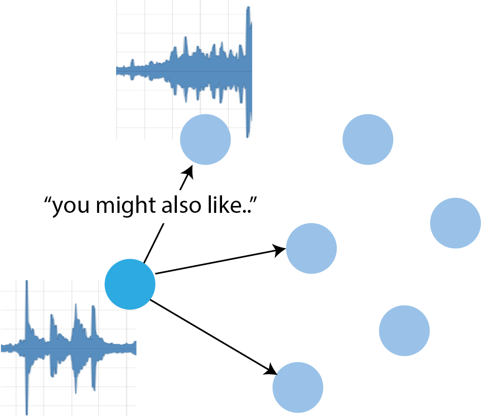
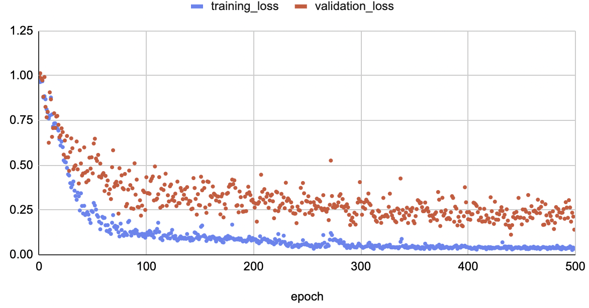

Introduction
Can we learn a music recommendation model from raw audio samples and a preference graph?

To answer this, I wanted to combine together a few topics I’ve been curious about recently: audio processing with deep neural networks, contrastive learning and graph data.
Not to mention the fact that I’m constantly looking for new music, and while friends and a few trusted broadcasters (e.g. NTS) are very helpful, I also rely on YouTube suggestions. So, what makes a good recommender model? Let’s find out!
Technical summary
This post describes an audio embedding model, trained to produce embeddings that are close together if the graph distances of their respective albums are small. In other words, I used the preference graph as supervision labels for the audio embeddings: in a contrastive setting, we consider an “anchor” sample, a positive and a negative one, which are here distinguished by their graph distance to the anchor.
It becomes a (context-free, static, non-personalized) recommendation model by:
- embedding a music collection with the trained model
- storing it into an index (here I used SQLite)
- embedding a query (a new music track) with the same model and looking up the most similar ones from the index.
Dataset
The recommendations graph is taken as fixed, and we do not know how it was constructed (whether using content information, or user interactions, or both).
Each graph vertex corresponds to a music /album/ which contains one or more tracks. In order to limit the size of the audio dataset I only considered music albums having the largest in-degree centrality. In simpler words, these are the most recommended albums in the recommendations graph.
There are a number of preprocessing steps, and the intermediate results are stored in SQLite to minimize the amount of training-time CPU compute. Here is a summary:
- Compute the graph in-degrees :
INSERT INTO nodes_degrees SELECT to_node, count(to_node) FROM edges GROUP BY to_node - Download top k albums by in-degree centrality:
SELECT album_url, nodes.album_id FROM nodes INNER JOIN nodes_degrees ON nodes.album_id = nodes_degrees.album_id WHERE degree > {degree_min} ORDER BY degree DESC LIMIT {k}. So far I useddegree_min= 10 andk= 50. - For each track in each album: split the audio in 30-seconds chunks, and assign it to either the training or test or validation partition. It’s crucial to fix the chunk length, as training works with data batches, and each batch is a (anchor, positive, negative)-tuple of B × T tensors (batch size, time steps).
- Compute the preference graph distances for each album, up to distance dmax, by breadth-first search. So far I used dmax = 4.
- For each dataset partition and audio chunk, sample a few other chunks from the graph distance map (“isochrone”?), among the closest and farthest from the anchor. The IDs for these will be stored in a triplet metadata table.
- The PyTorch
Datasetlooks up a triplet from a row index, then using that it retrieves the respective audio chunks (which are stored in SQLite asnp.ndarrays).
As a side note, I highly recommend storing intermediate dataset stages in a SQLite database rather than in a filesystem. This lets us look up things by various attributes without having to rely on crazy regexes, which in turn should help with long-term maintainability. Since it’s always available thanks to the Python base library, you don’t have to worry about the DB being unreachable and the like.
The music preference graph and audio samples were constructed from public sources.
Model, take 1
I initially experimented with a graph convolutional network. The idea behind this was to:
- Embed the most central audio samples
- Diffuse the embeddings out to all the remaining nodes with the GCN.
I dropped this approach because even with 1 GCN layer it required an awful amount of memory (PyTorch crashed with 16 GB vRAM).
Model, take 2
The embedding model is similar to the “Spotify CNN” introduced here back in 2014, with a couple variations.
The NN architecture can be broken down as follows:
- the audio samples are first down-sampled at 16 kHz and transformed into mel-spectrograms (which bins frequencies according to a human perceptual model). I use
n_mels = 128, 2048 FFT samples and a FFT stride of 1024 throughout. - the STFT representation is fed to 3 convolutional stages, i.e.
Conv1dinterleaved with a max-pooling operation (window size 4 and 2 respectively). Both the convolutions and the pooling are done over the time axis only. - After the last 1D convolution there is an average pooling operation over the whole time axis. The result of this is a vector of size
n_mels. - Next, there are three linear layers interleaved with a ReLU nonlinearity. The first linear layer maps from
n_melsto a largerdim_hidden = 1024, the middle one is a square matrix and the last one projects the hidden dimension down to our embedding space. - The fully-connected layers are then followed by a L2 normalization step.
The main changes from the Spotify CNN are:
- I don’t use 3 different time pooling functions but only an average pooling.
- The loss function: I use a triplet loss based on the Euclidean distance.
Training
At peak, training the model takes less than 4 GB of vRAM, which sits comfortably within a T4 or similar cheap-tier GPU. It’s also pretty fast, at 10-12 batches per second.
Training the model above converges quite smoothly, as we can see below:

With the following parameters:
- Adam optimizer
- base learning rate = 0.005
- batch size = 16
This BTW does not use any form of data augmentation, and interestingly the validation loss seems to keep slowly decreasing even after a large number of epochs. I suppose one could search for better optimizer hparams (the validation loss jumps around quite a bit) but this looks already good enough.
Saving checkpoints for inference
I use PyTorch Lightning for all my deep learning models, which takes care of automatically saving models during and at the end of each training run.
Initially I planned to export the models to ONNX for faster inference but it turns out at least one of my model blocks (the mel-spectrogram FFT) is not currently supported by ONNX due to some missing complex number implementation :/
Conclusion
In this post I’ve shown a way to use a preference graph as supervision signal for training a neural audio embedding model.
Stay tuned for pt. 2 with evaluation and more! Thanks for reading!